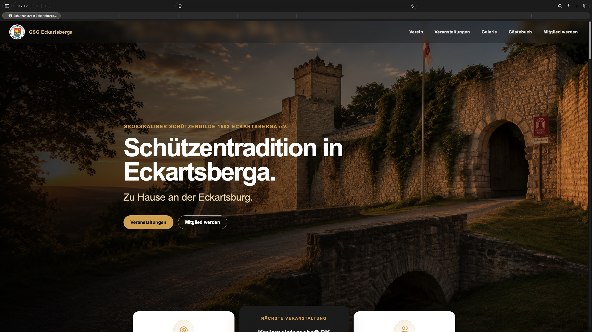
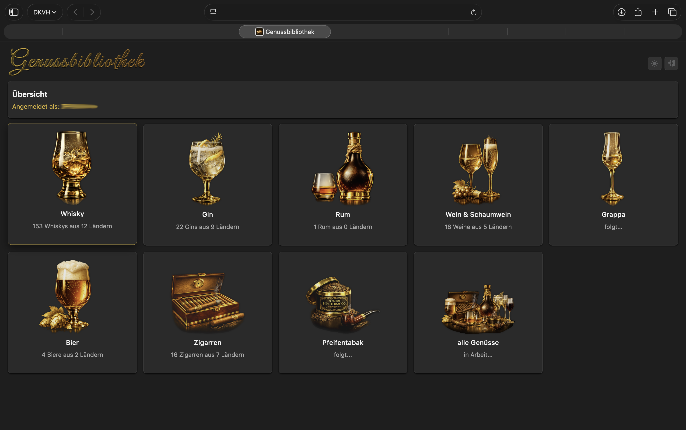
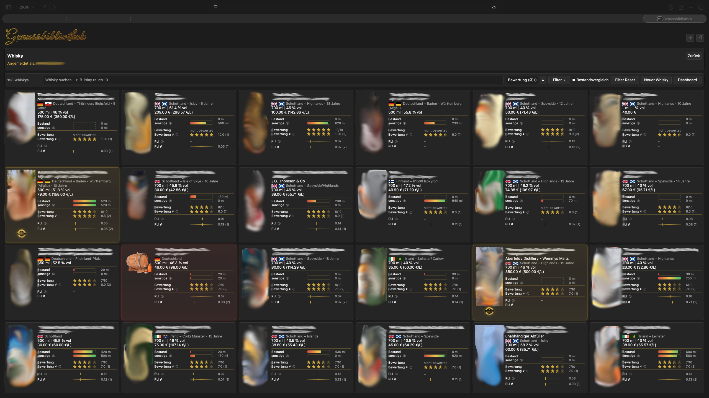
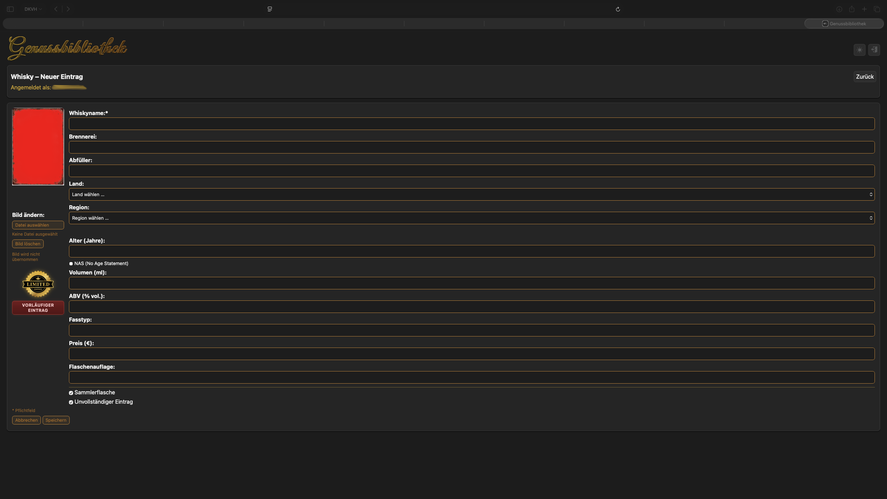
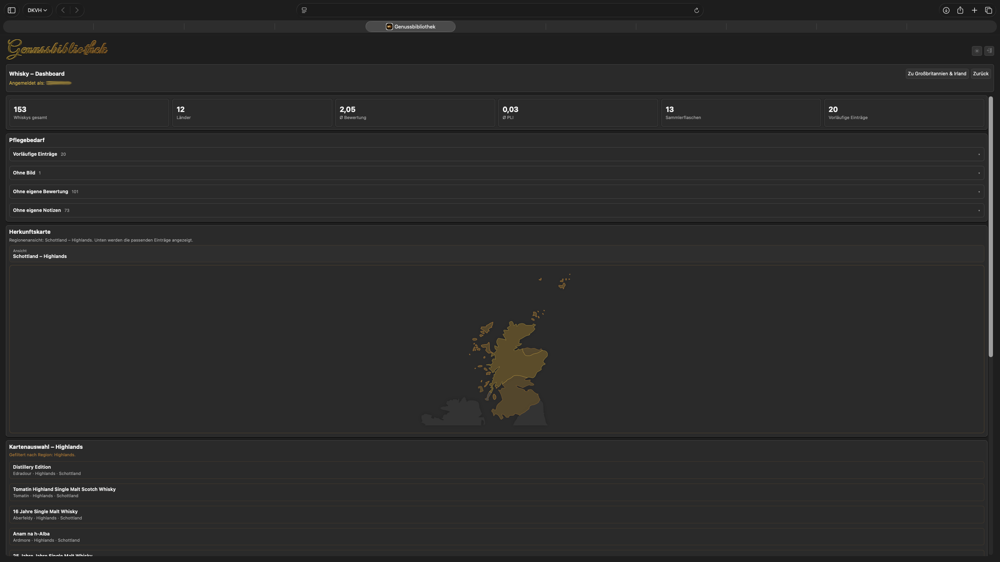

Vereinswebsite
Großkaliber Schützengilde 1503 Eckartsberga e. V.
Konzeption, Gestaltung und technische Umsetzung des neuen Vereinsauftritts mit Vereinsgeschichte, Veranstaltungskalender, Rückblicken und Bildergalerien.
Website ansehenWebsites · Webanwendungen
Ausgewählte Auftragsarbeiten aus Webgestaltung und Anwendungsentwicklung.

Vereinswebsite
Konzeption, Gestaltung und technische Umsetzung des neuen Vereinsauftritts mit Vereinsgeschichte, Veranstaltungskalender, Rückblicken und Bildergalerien.
Website ansehen



1 / 4
Genussdatenbank
Konzeption, Gestaltung und technische Umsetzung einer Webanwendung zur Erfassung und Bewertung ausgewählter Genüsse – mit Bestandsübersicht und Herkunftskarten.
Ansichten vergrößern